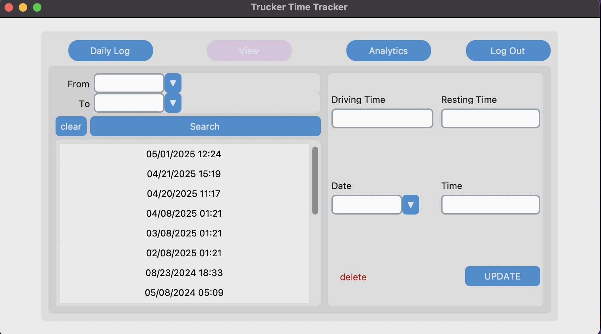

My Projects

This application is a truck Time Logger. It takes input from a user and displays the data as a graph. This application makes use of CustomTkinter, sql and matplotlib. The purpose of this application is to show the amount of time a driver will spend driving vs resting. This application was made from scratch so alot of the components we use were made by us. The difficult part of this project was the managing of multiple people working on different sections of the application